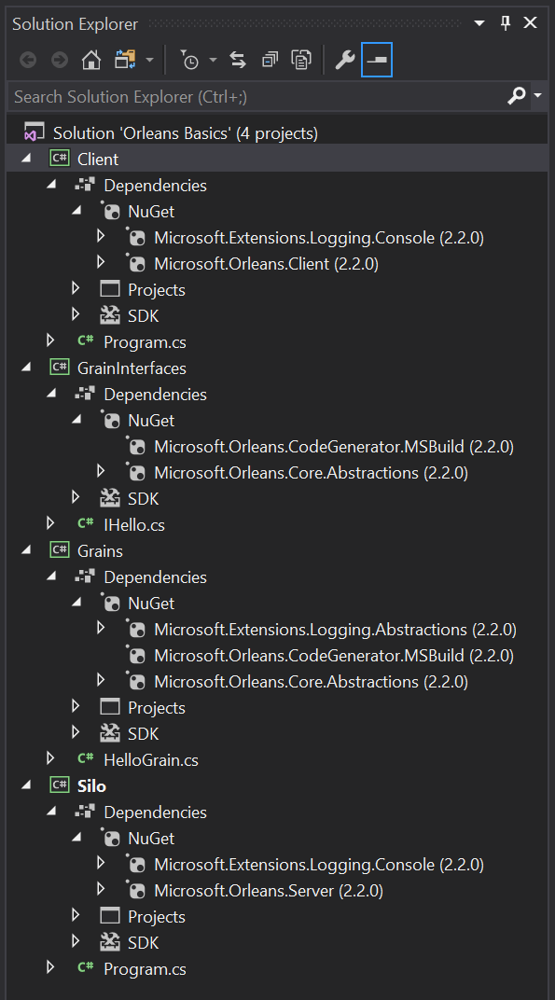

Tutorial One - Creating a Minimal Orleans Application
This tutorial provides step by step instructions for creating a basic functioning Orleans application. It is designed to be self-contained and minimalistic, with the following traits:
- It relies only on NuGet packages
- It has been tested in Visual Studio 2017 using Orleans 2.2.0
- It has no reliance on external storage
Keep in mind that this is only a tutorial and lacks appropriate error handling and other goodies that would be useful for a production environment. However, it should help the readers get a real hands-on with regards to the structure of Orleans and allow them to focus their continued learning on the parts most relevant to them.
Project Setup
For this tutorial we’re going to create 4 projects:
- a library to contain the grain interfaces
- a library to contain the grain classes
- a console application to host our Silo
- a console application to host our Client
After following this tutorial, the complete Solution should look like this:

Create the structure in Visual Studio
Note: You can use the default project types in c# for each of these projects.
You will replace the default code with the code given for each project, below.
You will also probably need to add using statements.
- Start by creating a Console App (.NET Core) project in a new solution. Call the project part
Siloand name the solutionOrleansHelloWorld. - Add another Console App (.NET Core) project and name it
Client. - Add a Class Library (.NET Standard) and name it
GrainInterfaces. - Add another Class Library (.NET Standard) and name it
Grains.
Delete default source files
- Delete Class1.cs from Grains
- Delete Class1.cs from GrainInterfaces
Add References
GrainsreferencesGrainInterfaces.SiloreferencesGrainInterfacesandGrains.ClientreferencesGrainInterfaces.
Add Orleans NuGet Packages
| Project | Nuget Package |
|---|---|
| Silo | Microsoft.Orleans.Server |
| Silo | Microsoft.Extensions.Logging.Console |
| Client | Microsoft.Extensions.Logging.Console |
| Client | Microsoft.Orleans.Client |
| Grain Interfaces | Microsoft.Orleans.Core.Abstractions |
| Grain Interfaces | Microsoft.Orleans.CodeGenerator.MSBuild |
| Grains | Microsoft.Orleans.CodeGenerator.MSBuild |
| Grains | Microsoft.Orleans.Core.Abstractions |
| Grains | Microsoft.Extensions.Logging.Abstractions |
Microsoft.Orleans.Server and Microsoft.Orleans.Client are meta-packages that bring dependency that you will most likely need on the Silo and Client side.
Microsoft.Orleans.Core.Abstractions is needed everywhere. It included in both Microsoft.Orleans.Server and Microsoft.Orleans.Client.
Microsoft.Orleans.CodeGenerator.MSBuild automatically generates code that is needed to make calls to grains across machine boundaries. So it is needed in both GrainInterfaces and Grains projects.
Define a Grain Interface
In the GrainInterfaces project, add a IHello.cs code file and define the following IHello interface in it:
using System.Threading.Tasks;
namespace OrleansBasics
{
public interface IHello : Orleans.IGrainWithIntegerKey
{
Task<string> SayHello(string greeting);
}
}
Define a Grain Class
In the Grains project, add a HelloGrain.cs code file and define the following class in it:
using Microsoft.Extensions.Logging;
using System.Threading.Tasks;
namespace OrleansBasics
{
public class HelloGrain : Orleans.Grain, IHello
{
private readonly ILogger logger;
public HelloGrain(ILogger<HelloGrain> logger)
{
this.logger = logger;
}
Task<string> IHello.SayHello(string greeting)
{
logger.LogInformation($"\n SayHello message received: greeting = '{greeting}'");
return Task.FromResult($"\n Client said: '{greeting}', so HelloGrain says: Hello!");
}
}
}
Create the Silo – Program.cs
At this step, we add code to initialize a server that will host and run our grains - a silo. We will use the development clustering provider here, so that we can run everything locally, without a dependency on external storage systems. You can find more information about that in the Local Development Configuration page of the Orleans documentation. We will run a cluster with a single silo in it.
Add the following code to Program.cs of the Silo project:
using System;
using System.Threading.Tasks;
using Microsoft.Extensions.Logging;
using Orleans;
using Orleans.Configuration;
using Orleans.Hosting;
namespace OrleansBasics
{
public class Program
{
public static int Main(string[] args)
{
return RunMainAsync().Result;
}
private static async Task<int> RunMainAsync()
{
try
{
var host = await StartSilo();
Console.WriteLine("\n\n Press Enter to terminate...\n\n");
Console.ReadLine();
await host.StopAsync();
return 0;
}
catch (Exception ex)
{
Console.WriteLine(ex);
return 1;
}
}
private static async Task<ISiloHost> StartSilo()
{
// define the cluster configuration
var builder = new SiloHostBuilder()
.UseLocalhostClustering()
.Configure<ClusterOptions>(options =>
{
options.ClusterId = "dev";
options.ServiceId = "OrleansBasics";
})
.ConfigureApplicationParts(parts => parts.AddApplicationPart(typeof(HelloGrain).Assembly).WithReferences())
.ConfigureLogging(logging => logging.AddConsole());
var host = builder.Build();
await host.StartAsync();
return host;
}
}
}
Create the Client – Program.cs
Finally, we need to configure a client for communicating with our grains, connect it to the the cluster (with a single silo in it), and invoke the grain. Note that the clustering configuration must match the one we used for the silo. There is more information about the client in the Clusters and Clients section of the Orleans documentation.
using Microsoft.Extensions.Logging;
using Orleans;
using Orleans.Configuration;
using System;
using System.Threading.Tasks;
namespace OrleansBasics
{
public class Program
{
static int Main(string[] args)
{
return RunMainAsync().Result;
}
private static async Task<int> RunMainAsync()
{
try
{
using (var client = await ConnectClient())
{
await DoClientWork(client);
Console.ReadKey();
}
return 0;
}
catch (Exception e)
{
Console.WriteLine($"\nException while trying to run client: {e.Message}");
Console.WriteLine("Make sure the silo the client is trying to connect to is running.");
Console.WriteLine("\nPress any key to exit.");
Console.ReadKey();
return 1;
}
}
private static async Task<IClusterClient> ConnectClient()
{
IClusterClient client;
client = new ClientBuilder()
.UseLocalhostClustering()
.Configure<ClusterOptions>(options =>
{
options.ClusterId = "dev";
options.ServiceId = "OrleansBasics";
})
.ConfigureLogging(logging => logging.AddConsole())
.Build();
await client.Connect();
Console.WriteLine("Client successfully connected to silo host \n");
return client;
}
private static async Task DoClientWork(IClusterClient client)
{
// example of calling grains from the initialized client
var friend = client.GetGrain<IHello>(0);
var response = await friend.SayHello("Good morning, HelloGrain!");
Console.WriteLine($"\n\n{response}\n\n");
}
}
}
Run the application
Build the solution and run the Silo. After you get the confirmation message that the Silo is running ("Press enter to terminate..."), run the Client. Success looks like this: